The World Through My Lens
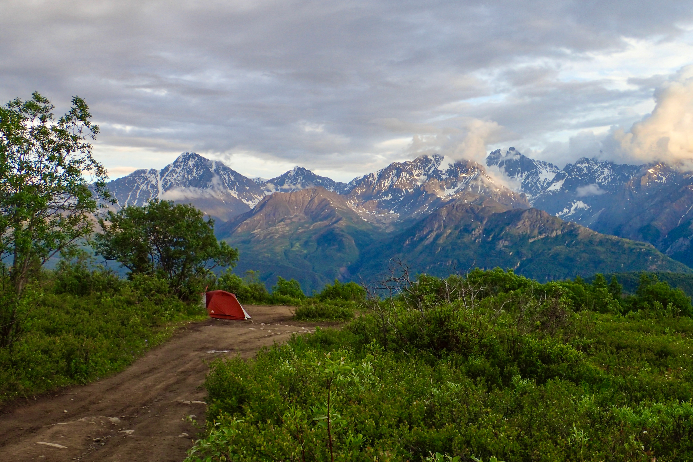

 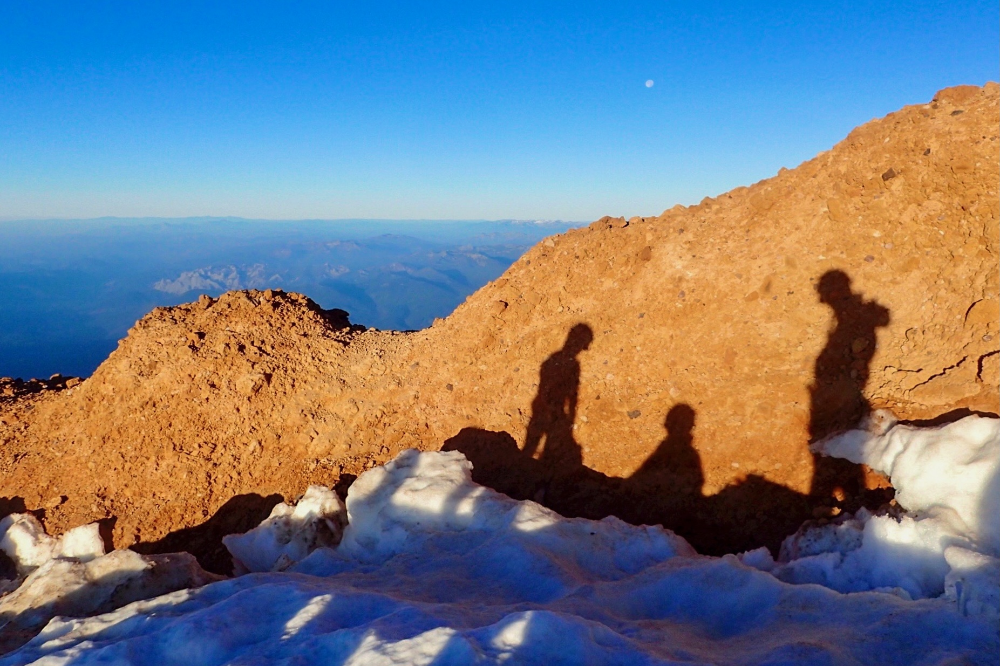
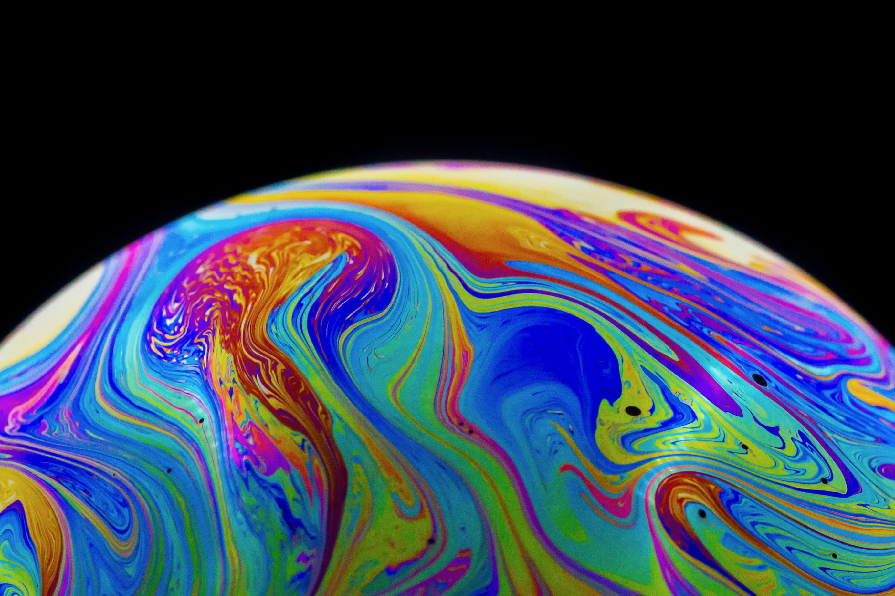
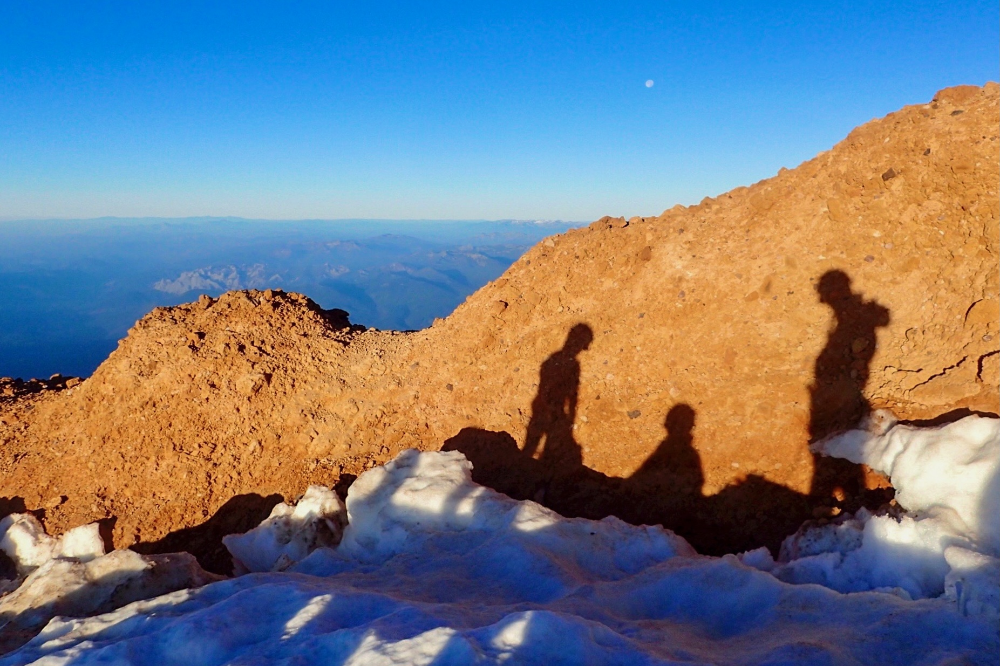
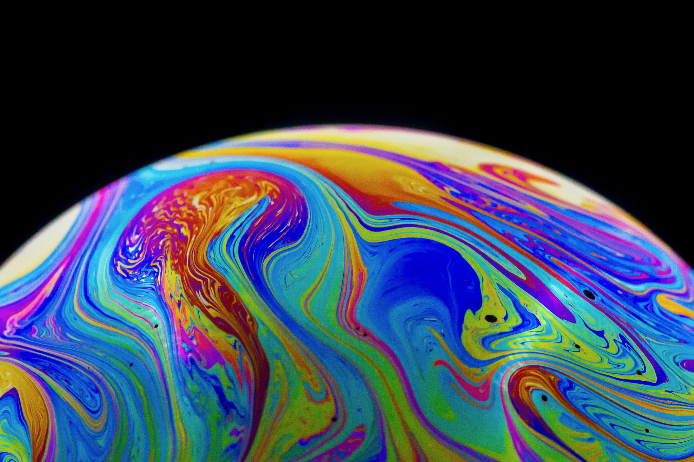
 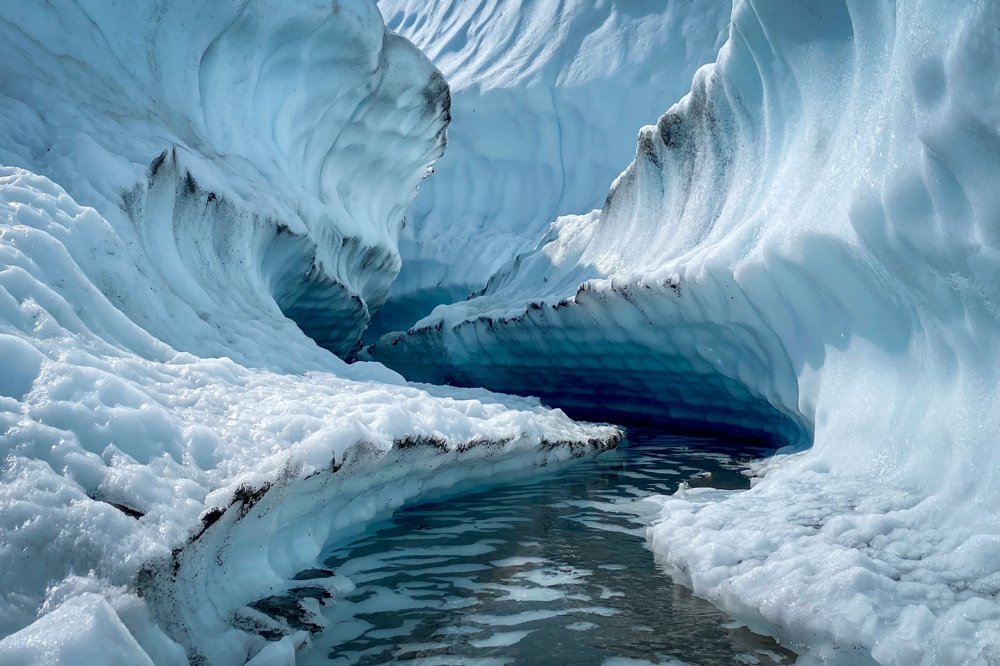
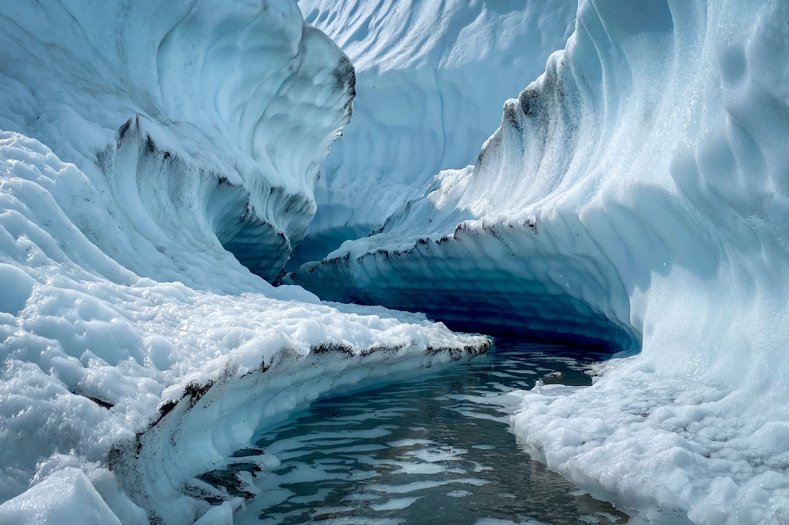


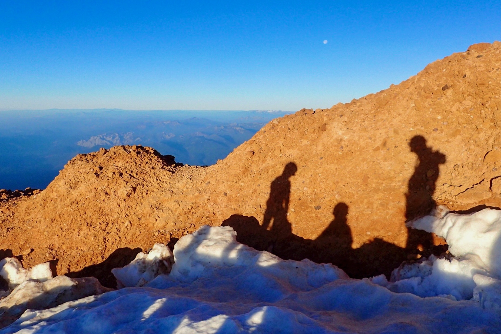
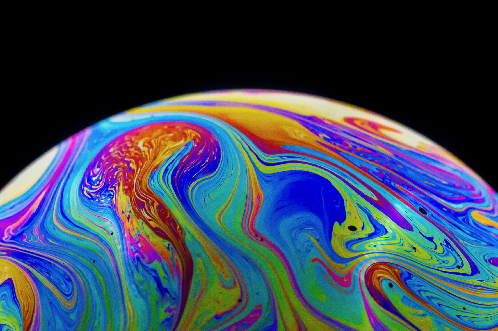
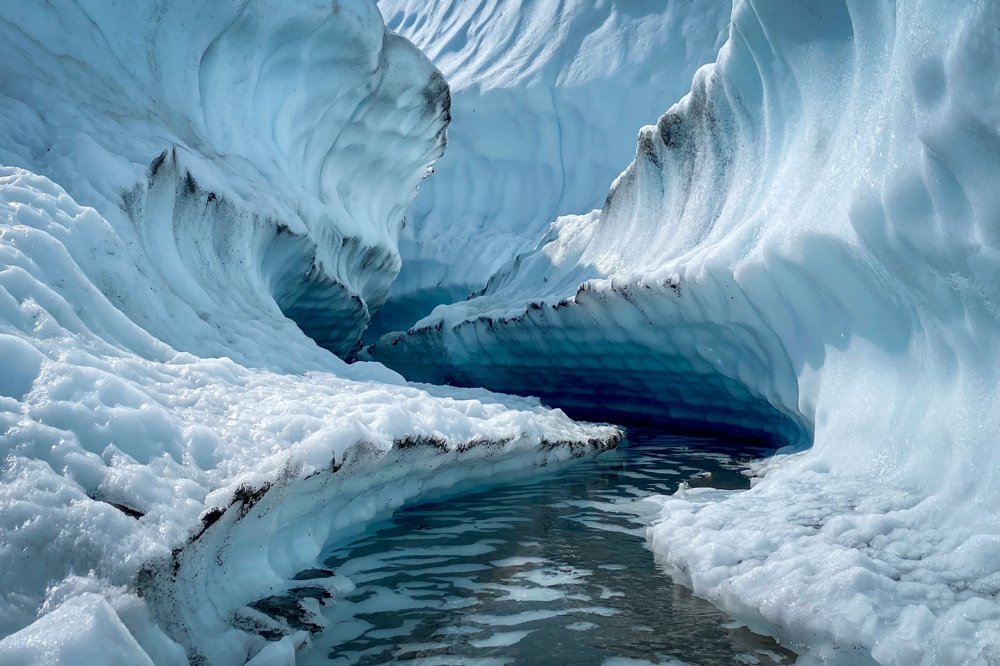
Having grown up amidst the vibrant landscapes of New York, Nairobi, and London, I've had the privilege of witnessing the beauty of diverse cultures. These experiences have fueled my desire to create inclusive and human-centered technology as a product manager.
I am currently a student at Brown University pursuing a degree in computer science and behavioral decision sciences. My coursework includes subjects such as UI/UX, responsible CS, machine learning, software engineering, and decision-making. I have experience crafting web applications through my work at the OECD AI Policy Observatory, hackathons and personal projects.
I also love exploring this beautiful planet by backpacking, hiking, rock climbing, biking and kayaking.
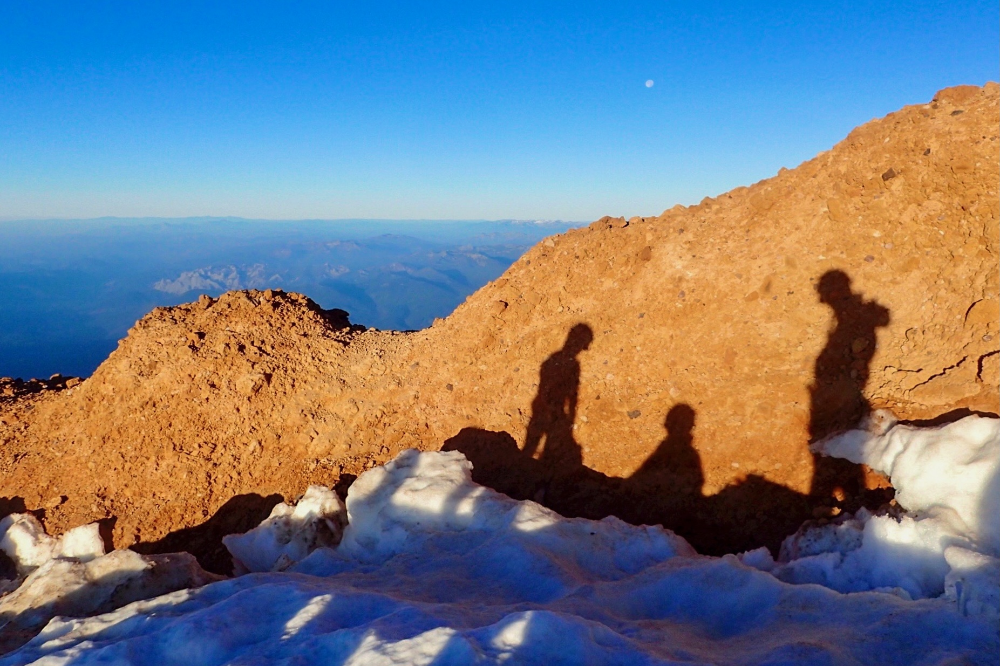
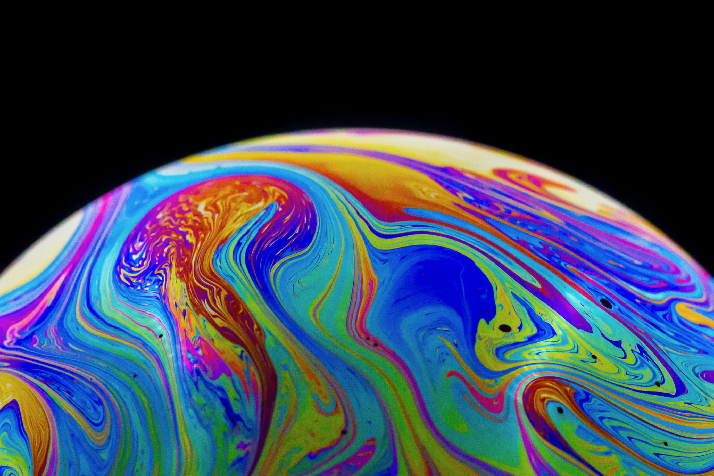
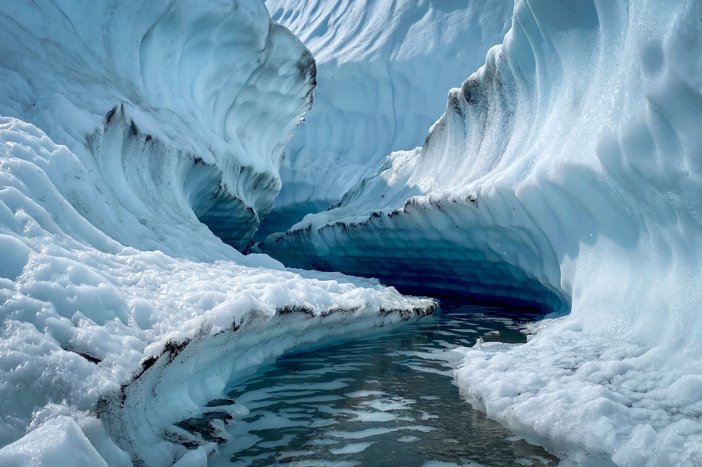